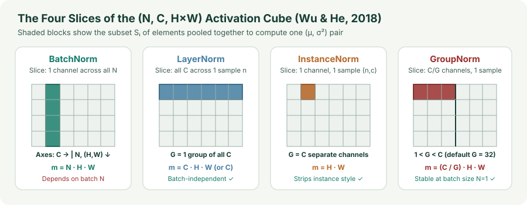

Spatial & Vision Normalizations: InstanceNorm, GroupNorm, and the $(N,C,H,W)$ Cube
Unify BatchNorm, LayerNorm, InstanceNorm, and GroupNorm as four index slices of a 4D $(N,C,H,W)$ feature tensor, see why InstanceNorm strips image style, and understand why GroupNorm stays stable at batch size $1$.
In computer vision—object detection, semantic segmentation, 3D medical volumes, and diffusion U-Nets—high spatial resolution $(H,W)$ forces per-GPU mini-batches down to $N=1$ or $N=2$ images. At $N=2$, BatchNorm’s ImageNet top-1 validation error jumps by more than $10$ percentage points because a 2-image mini-batch is too noisy to estimate population statistics. How should we normalize a 4D feature map $X\in\mathbb R^{N\times C\times H\times W}$ without touching the batch axis $N$?
1. One equation, four index slices of $(N,C,H,W)$
Wu and He (2018) showed that BatchNorm, LayerNorm, InstanceNorm, and GroupNorm all compute the exact same standardization formula
for every 4D index $i = (i_N, i_C, i_H, i_W)$, differing only in how they define the pooling set $\mathcal S_i$ of size $m = |\mathcal S_i|$:
Note that all four methods still apply a per-channel affine scale and shift $(\gamma_c,\beta_c)\in\mathbb R^{2C}$ after standardization.

2. Instance Normalization: stripping per-image contrast and style
Instance Normalization (Ulyanov, Vedaldi, & Lempitsky, 2016) sets $\mathcal S_i = \{k : k_N = i_N, k_C = i_C\}$, normalizing each single feature map $X_{n,c,:,:}\in\mathbb R^{H\times W}$ over its own $H\cdot W$ spatial locations:
- Why InstanceNorm excels at style transfer and image generation: In convolutional networks, the spatial mean $\mu_{n,c}$ and spatial variance $\sigma_{n,c}^2$ of a feature channel encode global image contrast, color palette, and brush texture (style), while the spatially normalized map $\hat X_{n,c,h,w}$ preserves local edges and object layout (content). Removing $(\mu_{n,c},\sigma_{n,c}^2)$ makes the representation invariant to image-level contrast shifts.
- Why InstanceNorm hurts discriminative classification: Setting every single channel of every image to unit variance ($G=C$) destroys the relative activation energy between channels—for instance, whether a “fur” detector fired $10\times$ more strongly than a “metal” detector on image $n$.
3. Group Normalization: why $G=32$ solves small-batch vision
Group Normalization (Wu & He, 2018) partitions the $C$ channels of sample $n$ into $G$ groups of $C/G$ channels each, and computes $(\mu_{n,g},\sigma_{n,g}^2)$ over the $(C/G)\cdot H\cdot W$ elements of group $g\in\{1,\dots,G\}$. Look at the two boundary cases of $G$:
- $G = 1$ recovers spatial LayerNorm: All $C$ channels share a single variance $\sigma_{n,1}^2$, which is overly restrictive in CNNs where early edge filters and specialized object-part filters have different natural scales.
- $G = C$ recovers InstanceNorm: Each channel is normalized in isolation, erasing relative energy comparisons between correlated filters.
- $G = 32$ (or $C/G = 16$ channels per group): Related filters within a group can vary in relative strength while the group as a whole has stable variance across $m = (C/G)HW$ samples. On ResNet-50 trained on ImageNet with per-GPU batch sizes from $N=32$ down to $N=2$, BatchNorm’s validation error degrades by $10.6\%$, whereas GroupNorm ($G=32$) has identical validation accuracy at $N=32, 16, 8, 4, 2,$ and $1$!
Because of this batch-size invariance, GroupNorm ($G=32$) is the standard normalization block inside Mask R-CNN detection heads, 3D U-Nets, and modern Diffusion U-Net backbones (DDPM, Stable Diffusion 1.5/XL).
4. Modern Vision Alternatives: Channel-Only `LayerNorm2d` and Weight Standardization
Two modern refinements complement GroupNorm in vision backbones:
- Channel-only `LayerNorm2d` (ViT & ConvNeXt): Instead of pooling over $(C,H,W)$, Vision Transformers and ConvNeXt normalize each pixel vector $X_{n,:,h,w}\in\mathbb R^C$ across the $C$ channels only ($m=C$), matching Transformer per-token LayerNorm at every spatial coordinate $(h,w)$.
- GroupNorm + Weight Standardization (WS, Qiao et al., 2019): While GroupNorm normalizes activations across channel groups, BatchNorm also implicitly normalizes each individual output channel’s filter scale. Weight Standardization explicitly normalizes each convolutional filter $W_{c,:}\in\mathbb R^{C_{\text{in}}k_H k_W}$ to zero mean and unit variance before convolving:
$$\hat W_{c,j} = \frac{W_{c,j} - \mu_{W_c}}{\sqrt{\sigma_{W_c}^2 + \varepsilon}},\qquad \mu_{W_c} = \frac{1}{M}\sum_{j=1}^M W_{c,j},\qquad \sigma_{W_c}^2 = \frac{1}{M}\sum_{j=1}^M(W_{c,j}-\mu_{W_c})^2.$$Pairing `GroupNorm(G=32)` with `WeightStandardization` at batch size $N=1$ matches or exceeds large-batch BatchNorm accuracy on ImageNet and COCO detection.
import torch
import torch.nn as nn
import torch.nn.functional as F
class WSConv2d(nn.Conv2d):
"""Conv2d with Weight Standardization (Qiao et al., 2019) for GroupNorm backbones."""
def forward(self, x: torch.Tensor) -> torch.Tensor:
w = self.weight
w_mean = w.mean(dim=(1, 2, 3), keepdim=True)
w_var = w.var(dim=(1, 2, 3), unbiased=False, keepdim=True)
w_hat = (w - w_mean) * torch.rsqrt(w_var + 1e-5)
return F.conv2d(x, w_hat, self.bias, self.stride, self.padding, self.dilation, self.groups)5. Questions worth answering
All four typically use $2C = 512$ learnable parameters ($\gamma,\beta\in\mathbb R^C$, one scale and shift per channel)—only the reduction axes used to compute the non-learned moments $(\mu,\sigma^2)$ differ! (Note: PyTorch’s nn.LayerNorm([C, H, W]) allocates $2CHW$ parameters by default unless you apply channel-only LayerNorm(C) on channels-last tensors.)
Each of the $G$ groups must contain an equal integer number of channels $C/G$. When $C < 32$, standard practice sets $G = \min(32, C)$ or fixes the channels-per-group ratio (e.g., $C/G = 8$ or $16$).
Sources
Ulyanov, Vedaldi, and Lempitsky, Instance Normalization: The Missing Ingredient for Fast Stylization (2016); Wu and He, Group Normalization (ECCV 2018); Qiao et al., Micro-Batch Training with Batch-Channel Normalization and Weight Standardization (2019).